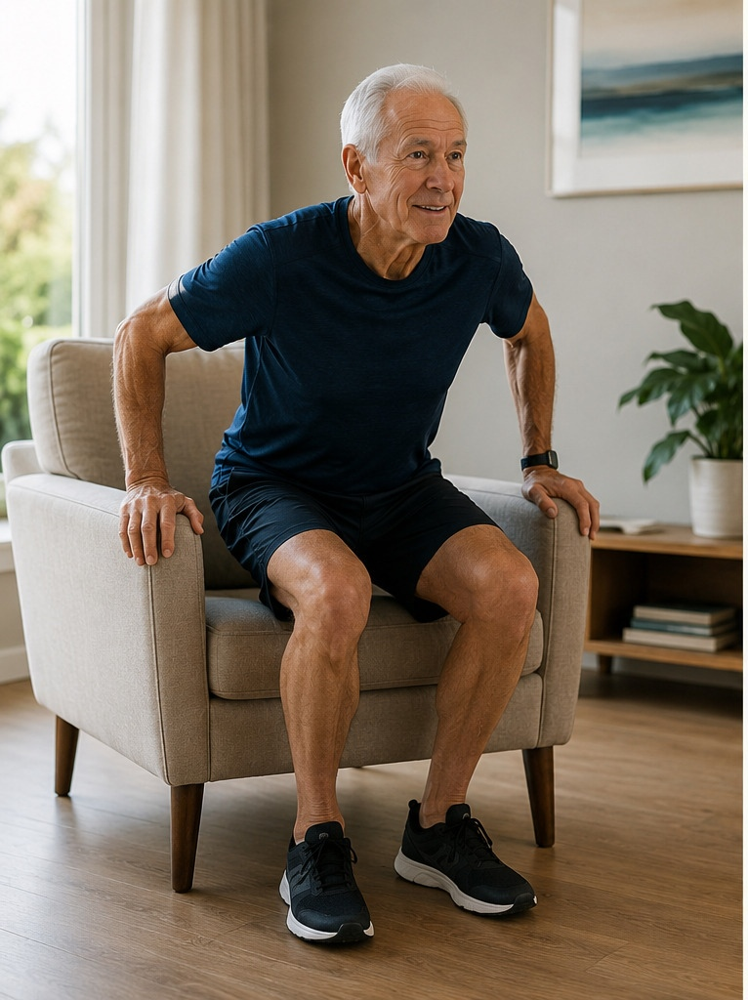
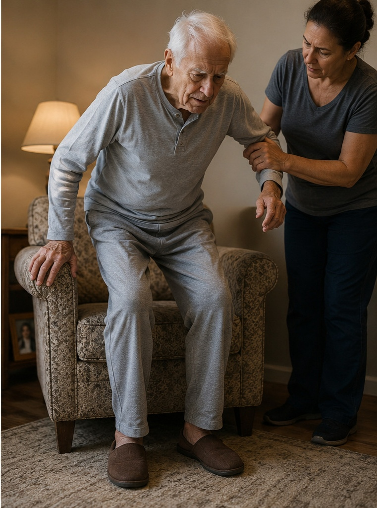

Movimento e autonomia depois dos 50
Manter-se em movimento depois dos 50 não é sobre aparência, é sobre continuar fazendo sozinho o que a vida pede: subir uma escada, levantar do sofá sem apoio, carregar as compras, brincar com os netos no chão.
Existe uma ideia enganosa de que envelhecer é, aos poucos, perder o controle sobre o próprio corpo. Não é bem assim. Boa parte da perda de força e equilíbrio que associamos à idade vem, na verdade, da falta de uso — não da idade em si. Os músculos e as articulações respondem a estímulo em qualquer fase da vida. A boa notícia é que nunca é tarde para começar, e os resultados aparecem mais rápido do que a maioria das pessoas imagina.
Autonomia é o verdadeiro objetivo
Quando o assunto é exercício depois dos 50, o foco muda. Não se trata de levantar mais peso ou correr mais rápido — trata-se de preservar a capacidade de fazer as coisas simples sozinho, com segurança e sem medo de cair. Levantar-se de uma cadeira sem usar os braços, agachar para pegar algo no chão, caminhar num piso irregular sem perder o equilíbrio: são esses movimentos do cotidiano que definem, na prática, o que chamamos de qualidade de vida.


Os três pilares do movimento
A maioria dos especialistas em atividade física para a terceira idade concorda que três capacidades merecem atenção especial a partir dos 50 anos:
- Força — principalmente nas pernas e no core (a musculatura do tronco). É o que sustenta cada levantada, cada subida de escada, cada passo mais firme.
- Equilíbrio — a capacidade de corrigir o corpo antes de uma queda. É treinável em qualquer idade e é uma das formas mais eficazes de prevenir acidentes domésticos.
- Mobilidade — a amplitude de movimento das articulações. Quanto mais ela é preservada, mais fácil é se vestir, se abaixar, girar o corpo para olhar para trás.
Um bom programa de movimento depois dos 50 não escolhe apenas um desses pilares — ele trabalha os três juntos, mesmo que de forma simples.
Como começar sem se machucar
O maior erro de quem retoma a atividade física depois de anos parado é tentar fazer demais, rápido demais. O corpo agradece consistência muito mais do que intensidade. Alguns princípios ajudam a começar bem:
- Comece pelo que já faz parte do seu dia: caminhar mais, usar as escadas, levantar e sentar da cadeira algumas vezes seguidas.
- Priorize a regularidade. Vinte minutos, três ou quatro vezes por semana, valem mais do que uma única sessão longa e cansativa.
- Respeite o desconforto de esforço, mas desconfie da dor aguda ou que persiste depois do exercício — esse é o sinal para desacelerar.
- Sempre que possível, peça orientação de um profissional de educação física para ajustar os movimentos à sua realidade e ao seu histórico de saúde.
Pequenos hábitos, grandes resultados
Não é preciso academia, equipamento caro ou horas livres no dia. Subir um lance de escada em vez de pegar o elevador, fazer uma caminhada depois do almoço, levantar e sentar da cadeira sem usar as mãos algumas vezes ao dia — pequenas escolhas repetidas com frequência constroem, com o tempo, o mesmo resultado de um treino estruturado. O corpo não distingue "exercício formal" de "movimento do dia a dia": ele responde ao estímulo, venha de onde vier.
Movimento não é sobre voltar a ser como era aos vinte anos. É sobre continuar sendo dono do próprio corpo, das próprias decisões e da própria rotina — hoje, e pelos muitos anos que ainda vêm pela frente.
Importante: este conteúdo é educativo e não substitui avaliação, diagnóstico ou acompanhamento profissional. Antes de iniciar qualquer programa de exercícios, converse com um médico ou profissional de educação física.